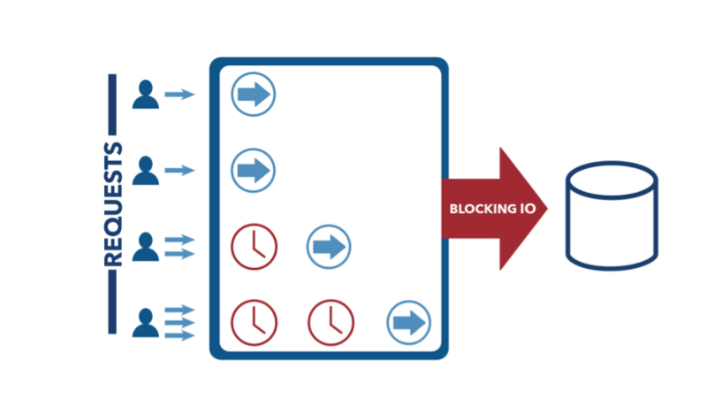
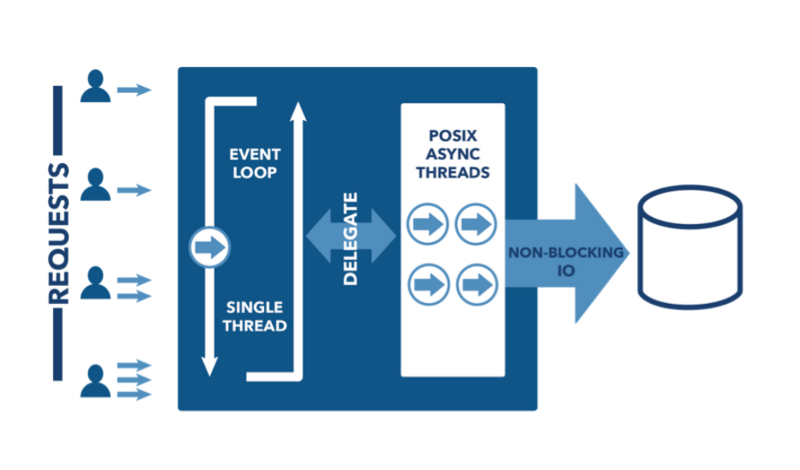
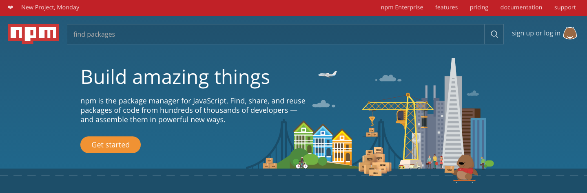
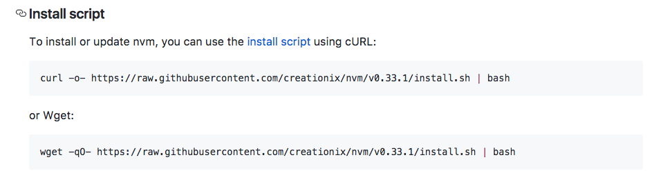

Christophe Sensebé
- Développeur web
- Je travaille à FMGS concept
- Je prépare un titre de concepteur developeur informatique au CEFIM
Qu'est ce que c'est
Plateforme logicielle libre, permettant d'éxécuter du javascript coté serveur.
crée en 2009, par Ryan Dahl, en critique au modèle utilisé d'I/O utilisé par la plupart des serveurs web et de leur incapacité à gérer un très grand nombre de requêtes concurentes (au dela de 10000).
I/O bloquante
I/O non bloquante
Node.js est construit en combinant
Le moteur javascript v8 de chrome
Libuv une bibliothèque C multi plateforme chargée de la gestion de la boucle d'évènements, du pool de threads et de la résolution asynchrone des opérations d'I/O.
Node.js intègre un gestionnaire de paquets NPM qui permet de consommer et de distribuer les modules javascripts présents sur ses registres
Node.js est disponible pour les principaux systèmes d'exploitation, dont Linux, MacOS et Windows
Les applications Node.js sont écrites en javascript ou n'importe quel language transpilable en javascript (CoffeScript, Dart, TypeScript...)
Comment ça marche
De base node fourni une API d'assez bas niveau, qui permet d'interagir avec le système de fichiers, le reseau, la manipulation de données binaires, des fonctions cryptographiques...
Qu'il est possible d'étendre via des add-on écris en C ou C++
Fonctionnement
Exemples
Lecture d'un fichier
const fs = require('fs');
fs.readFile('myFile.md', 'utf-8', (err, data) => {
if(err) {
console.log(err);
return;
}
console.log(data);
});
Serveur http
const http = require('http');
let server = http.createServer((request, response) => {
response.end('Hello world');
});
server.listen(8000);
Npm le gestionnaire de paquets
Le fichier package.json
{
"name": "ledserver",
"author": "ChrisSensebe"
"version": "0.0.0",
"private": true,
"scripts": {
"start": "node ./bin/www"
},
"dependencies": {
"body-parser": "~1.16.0",
"cookie-parser": "~1.4.3",
"debug": "~2.6.0",
"express": "~4.14.1",
...
La ligne de commande
$ npm init
$ npm install nomDuModule
$ npm run nomDuscript
https://docs.npmjs.com/
Le site NPM
 https://www.npmjs.com/Pour quoi faire
Pro / con
Adapté pour
- Applications web en temps réel
- Micro tâches
- Proxi en facade de différents services
- API construite sur une base servant du json (CouchDB, Mongo, Postgres
- Streaming
Pas un problème
- Api stable
- Système de release avec lts Tout les ans
- Communautée active
- Support de l'industrie
- Support de la plateforme dans les ide
moins adapté / défauts
- API basée sur les callbacks
- Applications gourmandes en temps de calcul
- Calcul scientifique
- Traitement audio/video
- Embarqué
- Utilisation avec une base relationelle
- CMS
Écosystème
Outillage javascript
- Webpack
- Grunt
- Gulp
- cli pour react, angular, cordova
Frameworks web
- Express http://expressjs.com/fr/
- HAPI https://hapijs.com/
- Koa http://koajs.com/
- Meteor https://www.meteor.com/
- Restify http://restify.com/
Electron
- Slack
- Atom
- Visual studio code
- Postman
En vrac
- socket.io
- PM2
- Johnny-Five
Exemple avec websocket + johnny-Five
Led ON
const five = require("johnny-five");
const board = new five.Board();
board.on('ready', () => {
let led = new five.led.RGB({
pins: {
red: 6,
green: 5,
blue: 3,
}
});
};
Rouge
led.color({
red: 255,
green: 0,
blue: 0
});
Vert
led.color({
red: 0,
green: 255,
blue: 0
});
Bleu
led.color({
red: 0,
green: 0,
blue: 255
});
Pour s'y mettre
Installation

Récupération d'un installeur ou des fichiers exécutables depuis le site officiel
https://nodejs.org/en/download/Utilisation de nvm
 https://github.com/creationix/nvm- Stackoverflow http://stackoverflow.com/questions/2353818/how-do-i-get-started-with-node-js
- Page github https://github.com/maxogden/art-of-node/#the-art-of-node
- Nodeschool https://nodeschool.io/
- CodeSchool https://www.codeschool.com/
- OpenClassRooms https://openclassrooms.com/courses/des-applications-ultra-rapides-avec-node-js
- Risingstack https://blog.risingstack.com/node-hero-tutorial-getting-started-with-node-js/